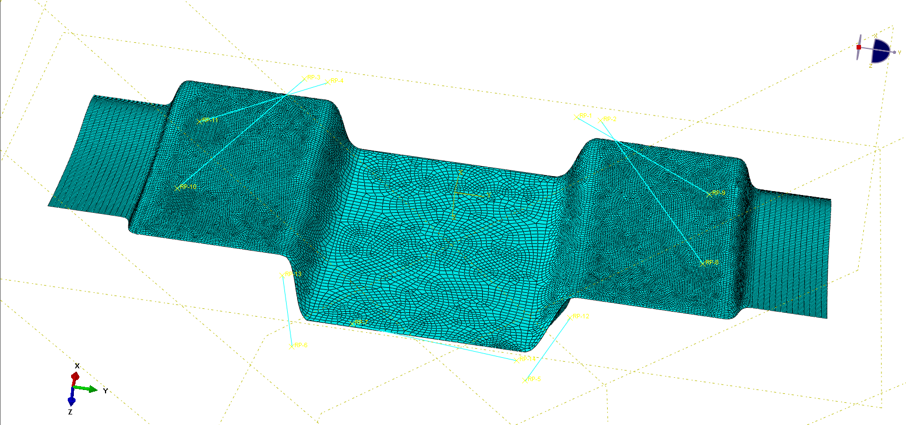
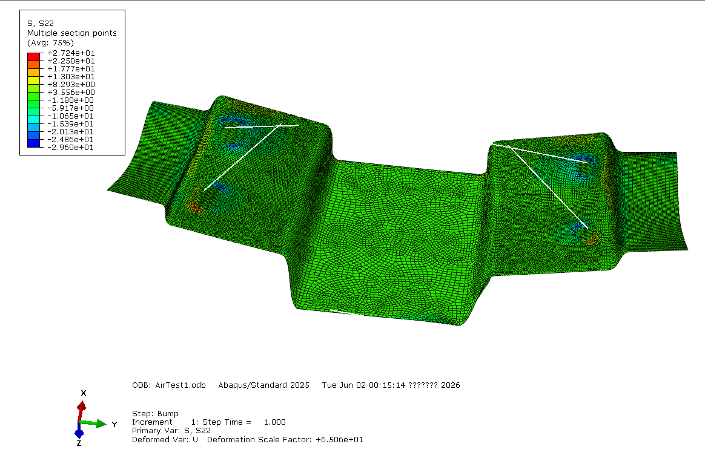
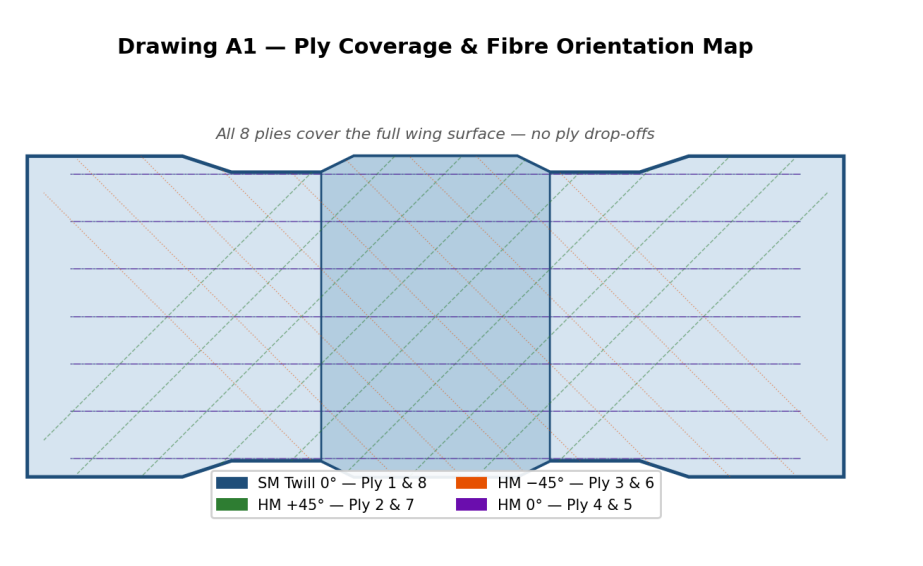

University of Auckland course project · FEA
Composite Front Wing FEA (Formula SAE-style load cases)
Laminate design and finite-element analysis of a carbon-fibre race-car front wing: the final layup carries the worst-case 4.1 g bump load at 74% of its allowable stress and weighs about 1.17 kg, 77% lighter than the first design.
My role: a University of Auckland course project using Formula SAE-style loads (not Formula SAE team work). I designed the laminate, built the Abaqus shell model, applied the three load cases, ran the ply-level stress checks and iterated the layup for mass.
Load cases and results
On small screens, swipe the table to see all columns.
| Load case | Loading | Criterion | Peak displacement | Utilisation |
|---|---|---|---|---|
| High-speed straight | 173.2 N downforce, 27.0 N drag | Infinite fatigue life | 0.056 mm | 1.9% |
| Cornering | 27.5 m/s² lateral | Infinite fatigue life | 0.385 mm | 6.1% |
| Bump | 4.1 g vertical | Ultimate, safety factor 1.5 | 2.096 mm | 74.0% |
The governing failure mode is transverse compression in the unidirectional plies next to the rod-end attachments under the bump case, remaining 26% below the chosen allowable stress, which includes a safety factor of 1.5.




How I modelled it
- Abaqus/Standard S4R shell model with one composite layup; mesh refined to 3 mm at the eight rod-end attachments, 5 mm at the leading and trailing edges and 10 mm elsewhere.
- Mesh check under the bump case: peak displacement changed by less than 0.3% between a coarse mesh of about 6,000 elements and the final 54,998-element mesh.
- Rod-ends modelled as spherical joints through kinematic couplings (translations fixed, rotations free).
- Ply-level maximum-stress check against fatigue allowables for the working cases and ultimate allowables ÷ 1.5 for the bump case.
- Honeycomb core considered and rejected: the double-curved surface complicates core machining and bonding, and the adhesive films alone would add about 400 g/m².
Design iteration
- Initial layup: 2.45 mm thick, about 3,750 g/m², under 2% utilisation in every case, so heavily over-designed.
- Final layup: symmetric, balanced [woven 0° / UD ±45° / UD 0°]s, eight plies, 0.89 mm thick, 850 g/m².
- Result: 77% lighter, all three load cases still met, and working-load deflection under 0.4 mm against the 10 mm limit.
Next steps: local ply drop-offs in the low-stress mid-span to save more mass, and coupon tests of the selected laminate.
Get in touch
I am completing my Master of Engineering Studies (Mechanical) at the University of Auckland in July 2027 and am looking for graduate mechanical engineering roles in New Zealand.